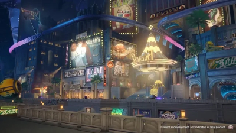
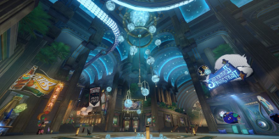

Story 2
Story 4
Penacony
Click here to go back to the home page.
I haven't finished the Penacony story, so all of this is what I currently know. If you want to know more, click here.
Beware of spoilers!!
Penocony is the "Planet of Festivities". The Astral Express get an invite from The Family- a super important organization that pretty much runs Penacony- and you go
and see what the heck is going on. Most of the story is spent in Penacony's Dreamscape- a vivid dream city of Penacony. Think of it like lucid dreaming
in a place that looks exactly like Vancouver with your friends.
Penacony used to be a prison run by the Interastral Peace Corporation -the IPC-, but when a stellaron appeared, the prisoners
revolted against the IPC and gained freedom.
Here's some pictures of Penacony:

